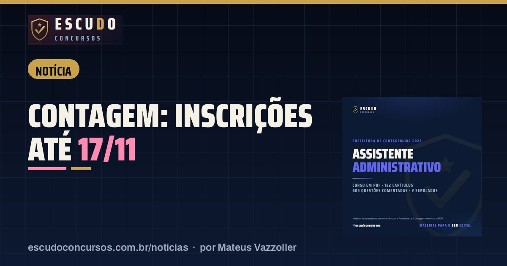

Contagem/MG Assistente Administrativo: inscrições terminam terça-feira, 17/11, às 16h
NotíciaPublicado em 12 de novembro de 2026 · por Mateus Vazzoller, ESCUDO Concursos

Quem quer trabalhar no atendimento, no protocolo e nas rotinas das secretarias da Prefeitura de Contagem tem até terça-feira, 17/11/2026, às 16h (horário de Brasília) para se inscrever como Assistente Administrativo. A inscrição é feita só no site do IBGP, a taxa é de R$ 70,00 e o boleto pode ser pago até 18/11/2026. A Retificação nº 02, publicada em 09/11/2026, não mudou essas datas.
| Órgão | Prefeitura de Contagem/MG, cargo 301, Assistente Administrativo |
|---|---|
| Banca | IBGP (Instituto Brasileiro de Gestão e Pesquisa) |
| Vagas | 150 (88 de ampla concorrência) |
| Vencimento | R$ 2.698,73 mais auxílio-alimentação, 40 horas semanais |
| Inscrições | até 17/11/2026, às 16h de Brasília |
| Taxa | R$ 70,00, boleto pago até 18/11/2026 |
O que mudou com a Retificação nº 02?
O IBGP publicou em 09/11/2026 a Retificação nº 02 do Edital nº 01/2026 e o texto consolidado, que também saiu no Diário Oficial de Contagem do mesmo dia. A mudança principal é um anexo novo, o Anexo X, que mostra em que posição de cada cargo entram os aprovados das vagas reservadas.
Para o Assistente Administrativo, o quadro ficou assim:
| Lista | Posições das primeiras vagas |
|---|---|
| Pessoas com deficiência | 5ª, 11ª, 21ª e de 10 em 10 até a 141ª, mais a 148ª e a 149ª |
| Pessoas negras | 2ª, 6ª, 10ª e de 4 em 4 até a 146ª |
| Indígenas | 17ª, 52ª, 84ª, 117ª e 150ª |
| Quilombolas | 25ª, 75ª e 125ª |
| Ampla concorrência | Todas as demais |
O que não mudou para o cargo 301: as 150 vagas e a divisão entre as listas, o programa de Língua Portuguesa, Raciocínio Lógico, Informática e Conhecimentos Específicos, o quadro de provas e a data da prova. Quem já estudava pelo edital de outubro não precisa mudar nada.
O que vence em 17/11 e em 18/11?
O prazo das 16h de terça vale para mais coisas do que a inscrição:
| O que fazer | Prazo |
|---|---|
| Preencher o formulário de inscrição | 17/11/2026, às 16h |
| Enviar o laudo médico em PDF, para concorrer como pessoa com deficiência | 17/11/2026, às 16h |
| Gerar a 2ª via do boleto | 18/11/2026, até as 17h |
| Pagar o boleto | 18/11/2026, no horário bancário |
| Lista das inscrições deferidas | até 24/11/2026 |
Duas regras do edital pegam muita gente. Depois de gerar o boleto, é preciso esperar pelo menos 2 horas para pagar, porque o código de barras leva esse tempo para ser validado no banco. E o agendamento de pagamento não vale: se o dinheiro não sair até 18/11/2026, a inscrição é anulada. Também não são aceitos PIX direto em conta, transferência ou depósito.
Como fazer a inscrição no IBGP
O caminho é a página do concurso em www.ibgpconcursos.com.br. Os passos do item 4.2.2 do edital:
- Ler o edital e os anexos.
- Preencher o formulário eletrônico com o cargo 301 e criar a senha da Área do Candidato.
- Gerar e guardar o comprovante de inscrição e o boleto.
- Pagar o boleto até 18/11/2026.
Quem não tem internet pode usar o computador e a impressora que a Prefeitura deixa na Escola de Governo, na Praça Tancredo Neves, 200, das 09h às 16h, de segunda a sexta-feira.
E depois da inscrição?
| Etapa | Data |
|---|---|
| Lista das inscrições deferidas e das vagas reservadas | até 24/11/2026 |
| Comprovante Definitivo com o local de prova | até 5 dias antes da prova |
| Prova objetiva, de manhã, das 9h15 às 12h15 | 24/01/2027 (domingo) |
A prova será em Minas Gerais, de preferência na própria cidade de Contagem. São 45 questões de quatro alternativas, e os Conhecimentos Específicos valem 60 dos 100 pontos. O peso de cada matéria e o que cai em cada uma estão no guia do concurso de Contagem.
O cupom CONTAGEM37 do curso ESCUDO para Contagem também vence em 17/11/2026: o PDF sai por R$ 37 em vez de R$ 47 até terça-feira.
Curso ESCUDO Assistente Administrativo de Contagem/MG em PDF: 122 capítulos e 605 questões comentadas, 2 simulados no formato da prova, de acordo com o edital. De R$ 47 por R$ 37 com o cupom CONTAGEM37 até 17/11/2026.
Ver o curso
Perguntas frequentes
Até quando vão as inscrições do concurso de Contagem?
Até 17/11/2026, às 16h no horário de Brasília, só pela internet, no site do IBGP.
Até quando posso pagar a taxa de Contagem?
O boleto de R$ 70,00 precisa ser pago até 18/11/2026. A 2ª via pode ser gerada até as 17h desse dia, e o pagamento agendado não é aceito.
A Retificação nº 02 mudou a prova do Assistente Administrativo?
Não. Ela criou o Anexo X, com a ordem de convocação das vagas reservadas, e manteve vagas, programa, quadro de provas e a data de 24/01/2027.
Leia também
- NotíciaGM São Gonçalo: inscrições terminam quarta-feira, 18/11, e o boleto vence no dia seguinte
13 de novembro de 2026 · Concurso Guarda Municipal de São Gonçalo/RJ: inscrições no SELECON terminam em 18/11/2026, boleto de R$ 95,18 até 19/11. 100 vagas e prova em 24/01/2027.
- NotíciaPM-SC Soldado: inscrições terminam segunda-feira, 16/11, e a idade máxima conta nesse dia
12 de novembro de 2026 · Concurso PM-SC Soldado: inscrições no Instituto AOCP terminam em 16/11/2026. Quem completa 30 anos até essa data fica de fora. Taxa de R$ 200,00 e prova em 13/12.
- NotíciaDPE-PB Técnico da Defensoria: inscrições terminam sexta-feira, 13/11, às 23h59
11 de novembro de 2026 · Concurso DPE-PB: inscrições para Técnico da Defensoria terminam em 13/11/2026, às 23h59, no site da FCC. Boleto de R$ 103,00 pode ser pago até 16/11.
Guia completo do concurso: edital, vagas e o que cai · Mais notícias e dicas de concursos